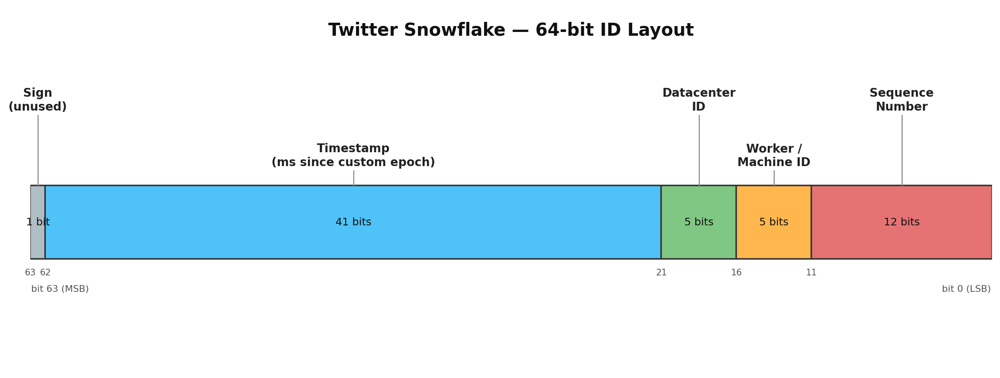
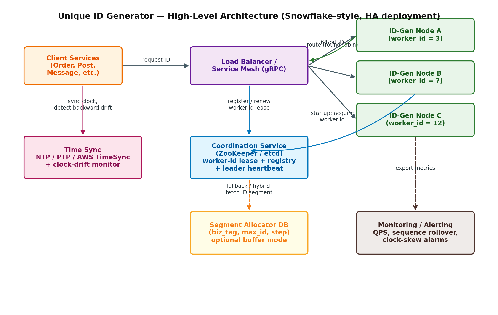

Unique ID Generator
Designing a highly available, low-latency, distributed ID generation service: requirements, capacity estimation, seven real-world approaches compared, a deep dive on a recommended Snowflake-based design, and 20+ interviewer follow-up questions.
Problem Statement
Design a service that generates unique identifiers for entities in a large-scale distributed system — for example, tweet IDs, order IDs, comment IDs, or rows in a sharded database. This is one of the most commonly asked system design interview questions (Twitter, Instagram, LinkedIn, Uber, Amazon, and most infra-heavy interviews) because it forces a candidate to reason about distributed coordination, clock synchronization, availability trade-offs, and capacity planning, all in a problem that sounds deceptively simple.
The core tension the interviewer is probing: a single database's AUTO_INCREMENT is trivially unique but does not scale or stay available; a fully random ID (UUID) scales infinitely but sacrifices sortability and index locality. A good answer explores this spectrum deliberately rather than jumping straight to "use Snowflake."
Clarifying Questions to Ask the Interviewer
Always open with these before proposing a design — the answers materially change the right solution, and asking them signals seniority.
- Do IDs need to be numeric (fit in a 64-bit integer, e.g. for a DB bigint PK), or can they be strings / 128-bit values?
- Must IDs be roughly time-ordered (k-sortable), or is global uniqueness the only hard constraint?
- What scale are we targeting — peak IDs/second today, and expected growth over 3–5 years?
- Is this single-datacenter or multi-region / multi-datacenter with active-active writes?
- Can ID generation tolerate brief unavailability, or is it on the critical path for every write (i.e. zero tolerance for a single point of failure)?
- Do IDs need to avoid leaking business information (e.g. order volume, growth rate) if ever exposed externally?
- Are IDs generated server-side only, or do clients (mobile, offline-first apps) also need to mint IDs without a network call?
Requirements
Functional Requirements
- IDs must be unique across the entire system — no two entities ever collide, even across regions and over the system's lifetime.
- IDs should be roughly sortable by creation time (commonly requested, since it enables cheap pagination and avoids a separate
created_atindex). - IDs should fit in 64 bits where the ID is used as a primary key / integer field (common constraint from existing schemas).
- The service should support multiple independent "namespaces" or entity types if needed (e.g. separate ID streams per table).
Non-Functional Requirements
- Availability: ID generation must never become a single point of failure for the write path; the system should keep issuing IDs even if some nodes or an entire AZ goes down.
- Low latency: generating an ID should ideally take sub-millisecond time, with no network round trip on the hot path.
- High throughput: must scale horizontally to well beyond current peak (target 100K–1M+ IDs/sec system-wide) without redesign.
- Fault tolerance: no single component failure should be able to produce a duplicate ID or halt generation system-wide.
- Operability: worker/node identity must be assignable and reclaimable safely as the fleet autoscales.
Capacity Estimation (Back-of-the-Envelope)
Example scale: a Twitter/Instagram-sized social platform.
⇒ ~8.5B IDs/day
⇒ 8.5B / 86,400s ≈ ~98,000 IDs/sec (average)
⇒ assume 10× peak factor ≈ ~1,000,000 IDs/sec (peak)
Bit-Budget Check for a 64-Bit Snowflake-Style ID
| Field | Bits | Capacity | Implication |
|---|---|---|---|
| Timestamp | 41 | 241 ms ≈ 69.7 years | Custom epoch (e.g. 2024-01-01) keeps the system valid past 2090. |
| Datacenter + Worker ID | 10 | 1,024 concurrent nodes | Comfortably covers most fleets; re-partition bits if you exceed this. |
| Sequence | 12 | 4,096 IDs / node / ms | = 4.096M IDs/sec/node theoretical max — far above the ~1M/sec system peak, even with only a handful of nodes. |
Conclusion: raw throughput is rarely the bottleneck for Snowflake-style designs — 5–10 nodes provide massive headroom over a 1M IDs/sec peak. The real engineering effort goes into availability, worker-ID assignment, and clock-drift safety, not raw capacity.
API Design
Two supported access patterns, both useful in production:
Network Service (gRPC / HTTP) — for Services That Can't Embed the SDK
POST /v1/ids/next { "namespace": "orders" }
-> 200 OK { "id": 175384930193948672 }
POST /v1/ids/batch { "namespace": "orders", "count": 500 }
-> 200 OK { "ids": [ ... 500 sorted int64 ... ] } // amortizes network costIn-Process Client Library (Recommended Default)
Most production Snowflake deployments (Twitter, Discord, Instagram-derivatives) embed the generation logic directly as a library inside each application process, with a worker ID assigned once at startup. This removes the network hop — and the coordination service — entirely from the hot path:
id_generator = SnowflakeGenerator(worker_id=fleet.acquire_worker_id())
order_id = id_generator.next_id() // pure in-memory call, no I/OApproaches Considered
Before committing to a design, walk through the spectrum of real-world solutions — this is the single highest-signal part of the interview.
| Approach | How it works | Size | Sortable | Coordination |
|---|---|---|---|---|
| DB auto-increment (single master) | MySQL/Postgres SEQUENCE or AUTO_INCREMENT on one primary. | 32/64-bit | Yes | Single DB (SPOF) |
| Multi-master DB w/ offset | N masters; server k generates k, k+N, k+2N, ... | 32/64-bit | Loosely | None at runtime, but hard to resize |
| UUID v4 | 128-bit random value (RFC 9562). | 128-bit | No | None — fully independent |
| UUIDv7 / ULID / KSUID | 48–64-bit ms/sec timestamp prefix + random suffix. | 128/160-bit | Yes (coarse) | None — fully independent |
| Ticket Server (Flickr-style) | One centralized DB/service whose only job is handing out incrementing tickets. | 64-bit | Yes | Central service (bottleneck + SPOF unless replicated) |
| Segment / Leaf (Meituan, Baidu) | Pre-fetch ID ranges (segments) into an in-memory double buffer; hand out locally. | 64-bit | Yes | DB write once per segment (e.g. every 1,000 IDs) |
| Twitter Snowflake | timestamp + datacenter ID + worker ID + sequence, generated in-process. | 64-bit | Yes (per-node) | One-time worker-ID lease at startup only |
| Instagram-style | Postgres per-shard sequence embedded with a 13-bit logical shard ID + 41-bit timestamp. | 63-bit | Yes | Existing Postgres per-shard sequences — no new service |
Recommended Design: Snowflake-Style Generator
For a general-purpose, large-scale, low-latency ID generator with no hard 64-bit-only constraint being the differentiator, the Snowflake pattern remains the standard interview answer: it needs no per-ID coordination, scales linearly with nodes, and gives you time-ordering for free. Below is a full deep dive, including where it breaks and how to patch it — which is what separates a strong answer from a memorized one.
64-Bit ID Layout

Design notes on the layout:
- Sign bit (1): always 0 so the value stays a positive signed 64-bit integer — avoids surprises in languages/DBs without unsigned 64-bit types (e.g. Java
long, most SQL BIGINT). - Timestamp (41 bits): milliseconds since a custom epoch (not Unix epoch) so the usable range starts at zero on day one — e.g. epoch = 2024-01-01T00:00:00Z gives ≈69.7 years of headroom before rollover.
- Datacenter + worker ID (10 bits): identifies the generating node; split as 5+5 if you need physical datacenter-awareness, or use all 10 bits as a flat worker ID if you have one region.
- Sequence (12 bits): resets to 0 every millisecond tick, incremented for each ID minted within that same millisecond on that node.
Worker ID Assignment
The most common real-world failure mode is not the algorithm — it's two nodes accidentally sharing a worker ID. Three strategies, in increasing order of production-readiness:
- Static config file: simplest, but error-prone — a copy-paste mistake during deploy silently creates duplicate IDs. Acceptable only for small, rarely-changed fleets.
- Kubernetes StatefulSet ordinal: pod-0, pod-1, ... map deterministically to worker IDs 0, 1, ... — simple and safe as long as the StatefulSet's ordinal guarantee holds and you don't exceed the bit budget.
- ZooKeeper / etcd leased sequential node (recommended): on startup, a node creates a sequential ephemeral znode/lease under a fleet path; the sequence number becomes its worker ID. The lease is renewed via heartbeat; if a node dies, the lease expires and the ID is only reclaimed after a safety cooldown ≥ max tolerated clock drift, so a resurrected node can't collide with a zombie still holding the old ID.
Clock Drift & Backward Time Jumps
Because uniqueness depends on the timestamp component, a clock moving backward (NTP correction, VM live-migration, leap-second smear failure) is the single biggest correctness risk in this design.
- Every ID request compares the current time to the last timestamp recorded by that node.
- If current time < last timestamp: for a small drift (a few ms), the node blocks briefly and waits for the clock to catch up rather than reusing an old timestamp.
- If the drift exceeds a hard threshold, the node refuses to generate IDs ("fail closed") and raises an alert — producing a duplicate is far worse than a brief outage on one node.
- Production fleets run NTP or PTP with active drift monitoring rather than assuming sync is perfect; cloud vendor time services (AWS Time Sync, Google TrueTime) additionally "smear" leap seconds so the clock never actually steps backward.
Sequence Overflow
If more than 4,096 IDs are requested within the same millisecond on one node, the sequence counter wraps. The generator busy-waits (spins) until the clock ticks over to the next millisecond, then resets the sequence to 0 (or a small random offset, to reduce the predictability of IDs if that matters for the product).
Monotonicity — a Common Interview Trap
IDs generated by a single node are strictly increasing. Across different nodes, IDs are only approximately time-ordered — clock skew of a few milliseconds between nodes means a slightly earlier ID from node A can be numerically larger than a slightly later ID from node B. Call this out proactively: if the product needs a global total order (rare), Snowflake alone does not provide it, and you need either a single writer per shard or a stronger ordering primitive (e.g. TrueTime-style with commit-wait, as in Google Spanner).
High-Availability Architecture

The key resilience property: because the coordination service (ZooKeeper/etcd) is only consulted when a node starts up or renews its lease — not on every ID request — a coordination-service outage does not stop already-running nodes from generating IDs. It only blocks new nodes from joining, which is a much smaller blast radius.
Failure Modes & Mitigations
| Failure | Impact | Mitigation |
|---|---|---|
| Coordination service (ZK/etcd) unavailable | New nodes can't acquire a worker ID at startup. | Existing nodes keep generating (lease already held); use conservative lease TTLs with renewal well before expiry; alert and manually backfill worker IDs if outage is prolonged. |
| Clock moves backward | Risk of timestamp reuse → duplicate ID. | Fail-closed above a drift threshold; NTP/PTP with drift alarms; brief in-memory wait for small drifts. |
| Worker-ID exhaustion (>1,024 nodes) | No IDs left to assign to new nodes. | Re-partition bits (borrow from sequence or timestamp, as Instagram does with a 13-bit shard ID), or move to a hierarchical DC+rack+node scheme. |
| Duplicate worker ID (misconfig) | Two nodes silently produce colliding IDs. | Use leased sequential assignment (ZK/etcd) instead of static config in production; add a canary/duplicate-detection job. |
| Sequence overflow within 1ms | Would-be duplicate within the same millisecond. | Busy-wait to next millisecond tick before continuing. |
Modern Alternative Worth Raising: UUIDv7
As of RFC 9562 (published May 2024), UUIDv7 is now a standardized 128-bit, time-ordered UUID: a 48-bit millisecond Unix timestamp followed by version/variant bits and ~74 bits of randomness. PostgreSQL 18 and MySQL 8.4+ ship native or near-native support, and by 2026 most language/ORM libraries default new UUID usage to v7 over v4.
Why raise it proactively in an interview:
- No coordination at all: any node generates independently — no worker-ID assignment, no coordination service, none of Snowflake's operational surface area.
- Time-ordered like Snowflake: solves the classic "random UUIDv4 as a DB primary key" problem — sequential UUIDv7 inserts avoid the B-tree page-split penalty of UUIDv4 (which is roughly 3× slower to insert and produces a ~40% larger index versus a sequential key).
- Trade-off: 128 bits instead of 64 (2× storage), and only millisecond-granularity ordering with no built-in per-node monotonic sequence guarantee (some implementations add one as an extension).
Database & Storage Considerations
IDs as a Clustered Primary Key
If the ID is the clustered/primary index of a table, prefer a sortable ID (Snowflake, UUIDv7, ULID) over random UUIDv4. Random keys cause every insert to land on a random index page, forcing page splits and index bloat; sequential keys let the DB simply append, which is dramatically cheaper at write time and keeps the index compact.
Segment/Leaf Hybrid Schema (Fallback for Stateless Workers)
CREATE TABLE id_allocator (
biz_tag VARCHAR(64) PRIMARY KEY, -- e.g. 'orders', 'comments'
max_id BIGINT NOT NULL,
step INT NOT NULL, -- e.g. 1000
updated_at TIMESTAMP
);
-- Atomically claim the next segment:
UPDATE id_allocator
SET max_id = max_id + step, updated_at = now()
WHERE biz_tag = 'orders'
RETURNING max_id;
-- Node then hands out [max_id - step, max_id) locally from memory.Double-buffer the next segment asynchronously before the current one is exhausted, so no request ever blocks on a DB round trip — this is exactly how Meituan's Leaf and Baidu's UidGenerator avoid the Ticket Server's latency-spike problem.
Scalability & Fault Tolerance
- Horizontal scale: add generator nodes/workers; throughput scales linearly since there is no coordination on the hot path.
- No shared-state bottleneck: pure Snowflake mode never touches a shared DB or lock to mint an ID.
- Segment-mode bottleneck: the allocator DB is hit once per segment (e.g. every 1,000 IDs), not once per ID — tune the step size to trade DB load against "lost" IDs on a crash (unused IDs in a claimed segment are simply skipped).
- Multi-region: assign disjoint datacenter-ID ranges per region so regions can mint IDs independently with zero cross-region coordination, at the cost of the datacenter bits in the budget.
Monitoring & Operations
- IDs/sec per node, and sequence-counter utilization per millisecond (approaching 4,096 signals you need more nodes or a bit re-partition).
- Clock-drift / clock-skew alarms per node, sourced from the NTP/PTP daemon.
- Worker-ID lease renewal failures and coordination-service health.
- A background duplicate-ID canary/audit job as a defense-in-depth check.
- Runbooks for: coordination-service outage, NTP daemon failure, and a node restarting with a stale/incorrect worker ID.
Security Considerations
Time-ordered, sequential IDs (Snowflake, Segment, Instagram-style) leak information by construction — two IDs' difference roughly reveals how many entities were created between them, which can expose order volume, user growth, or business velocity to anyone who can observe two IDs over time.
- Don't expose raw internal IDs externally: map them to an opaque public-facing token (e.g. Hashids, a random public ID stored alongside the internal one, or simple AES/FF3 format-preserving encryption) before returning them in public APIs.
- Don't rely on ID obscurity for access control: authorize every read/write by permission checks, not by assuming an ID is hard to guess (classic IDOR / enumeration risk).
Trade-off Summary
| Dimension | DB Auto-Inc. | UUIDv4 | UUIDv7/ULID | Segment (Leaf) | Snowflake |
|---|---|---|---|---|---|
| Uniqueness scope | Single DB | Global | Global | Global (per tag) | Global |
| Sortable | Yes | No | Yes (coarse) | Yes | Yes (per-node strict) |
| Size | 32/64-bit | 128-bit | 128/160-bit | 64-bit | 64-bit |
| Coordination | Central DB | None | None | DB per segment | One-time lease |
| Availability risk | High (SPOF) | None | None | Low (buffered) | Very low |
| Best for | Small systems | No ordering need | New DB PKs | Migrating off auto-inc | High-throughput + ordering |
Common Interview Questions
Grouped the way an interviewer typically escalates — from requirements, into internals, into failure cases, then scaling and comparisons. Use the hints to structure a spoken answer, not as a script to memorize.
Requirements & Trade-offs
Snowflake Internals
Failure & Edge Cases
Scaling Further
Comparisons & Alternatives
Security & Product
Key Takeaways
References
- "System Design Interview: Scalable Unique ID Generator (Twitter Snowflake)"
- "Design a Unique ID Generator in Distributed Systems" — System Design Handbook
- "Unique ID Generators — Snowflake, UUID, ULID for System Design"
- "What Are the Differences Between UUID, ULID, KSUID, and Snowflake IDs"
- "System Design Interview Vol. 1, Ch. 7 — Design a Unique ID Generator"
- "Sharding & IDs at Instagram" — Instagram Engineering
- "Snowflake Operational Complexity: Clock Management and Worker Identity"
- "Snowflake IDs: Clock Skew, Collision, Capacity"
- "UUIDv7 and RFC 9562 FAQ"
- "UUIDv7 in PostgreSQL 18: What You Need to Know"
- "Stop Using UUID v4 for Database Primary Keys — UUIDv7 is the 2026 Default"